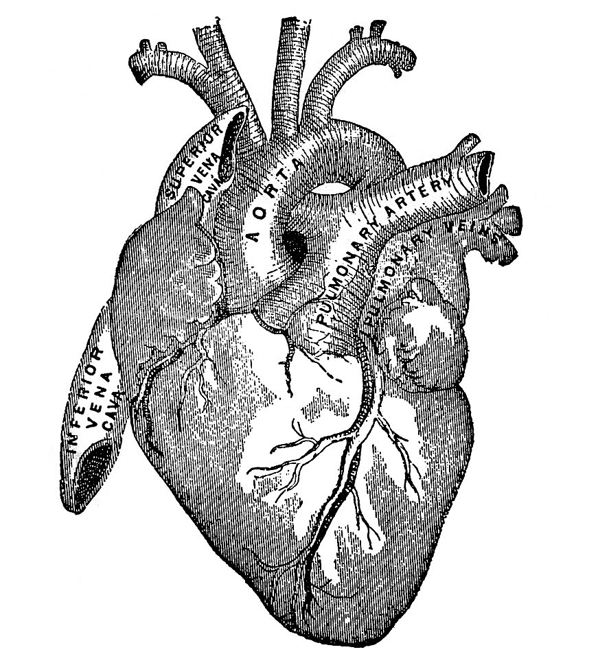
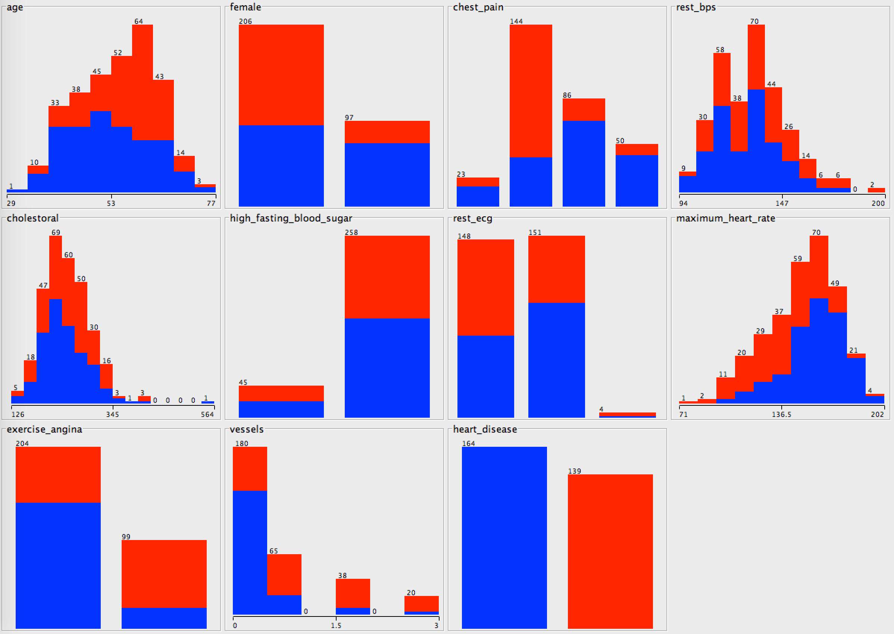

CSCI 150 - Lab 3
Diagnosing Heart Disease
Overview
This lab
we investigate some pieces of "intelligence," using our ability to divide objects into categories.
Materials
Description
While the formal system of Boolean logic was developed by
George Boole,
the study of logic has roots as far back as Ancient Greece and
Aristotle and his foundational work on
Syllogisms. Our ability to reason
logically and rationally is often cited as a primary indicator of our intelligence, not only on an
individual level as measured by SAT and IQ tests, but also on a species level to distinguish our
actions and behaviors from other organisms. Today we will spend
our first lab understanding the basics of intelligence.
Artificial Intelligence (AI) is a field within computer science with the goal of recreating, through
the user of a computer, the
intelligence we see in human behavior. The goal of AI has yet to be achieved on a broad sense,
but much progress has been made in the fields of logic and categorization. We tackled
deductive reasoning
with logic puzzles,
deducing a conclusion of what must be true from the facts presented to us. Today we'll focus on
inductive logic: our ability
to make generalizations based on data and apply these general rules to new situations.
Step 1
Imagine you are tasked by the Cleveland Clinic to
help them train new doctors to diagnose patients with heart disease. They have been
reviewing their past patient histories and started to notice some patterns after narrowing their
focus to a few key features of each patient. They show you some histograms,
where the patients with heart disease are labeled red, and those without are labeled blue.

They also give you some more detailed information about these features.
- age: age in years (integer)
- female: true if female patient (boolean)
- chest_pain: four types of chest pain were recorded (string)
- typical angina
- atypical angina
- non-anginal pain
- asymptomatic
- rest_bps: resting blood pressure in mm Hg on admission to the
hospital (integer)
- cholesterol: serum cholesterol in mg/dl (integer)
- high_fasting_blood_sugar: true if > 120 mg/dl (boolean)
- rest_ecg: resting electrocardiographic results (string)
- normal
- wave abnormality
- hypertrophy
- maximum_heart_rate: maximum heart rate achieved (integer)
- exercise_angina: exercise induced angina (boolean)
- vessels: number of major vessels (0-3) colored by flourosopy (integer)
- heart_disease: diagnosis of heart disease.
The final piece of data, heart_disease, is what they would like to summarize based on
the other 10 features.
They present you with the following ten example patients
above, listing off their features. They would like a way to make decisions about newly admitted patients which is
based on the information above, and simple enough for someone to remember the rule.
Table of Patients Training Data
| age | female | chest_pain | rest_bps | cholesterol | high_fasting_blood_sugar | rest_ecg | maximum_heart_rate | exercise_angina | vessels | heart_disease |
|---|
| 63 | False | typical angina | 145 | 233 | True | hypertrophy | 150 | False | 0 | False |
| 67 | False | asymptomatic | 160 | 286 | False | hypertrophy | 108 | True | 3 | True |
| 67 | False | asymptomatic | 120 | 229 | False | hypertrophy | 129 | True | 2 | True |
| 37 | False | non-anginal pain | 130 | 250 | False | normal | 187 | False | 0 | False |
| 41 | True | atypical angina | 130 | 204 | False | hypertrophy | 172 | False | 0 | False |
| 56 | False | atypical angina | 120 | 236 | False | normal | 178 | False | 0 | False |
| 62 | True | asymptomatic | 140 | 268 | False | hypertrophy | 160 | False | 2 | True |
| 57 | True | asymptomatic | 120 | 354 | False | normal | 163 | True | 0 | False |
| 63 | False | asymptomatic | 130 | 254 | False | hypertrophy | 147 | False | 1 | True |
| 53 | False | asymptomatic | 140 | 203 | True | hypertrophy | 155 | True | 0 | True |
We will be adding our logical rules to a file called
analysis.py. Using what you know about if-elif-else statements,
edit this python program where directed to classify a given patient.
- THREE SUBSETS TO ANALYZE
Observe the analysis results on the training set given above. How accurate is your rule?
Step 2
We now wish to evaluate how your program will work on unseen data.
Test your edited analysis.py program with the testing data.
What To Hand In
Hand in your files on Moodle.
Write up your four if-elif-else statements from step 1 in a file
called analysis.py. Write the results of
each test example in step 2 with each if-elif-else statement above into
an evaluation document.
You must hand in:
- analysis.py
- Lab Evaluation
Grading Standard
WRITE ME
© Mark Goadrich 2015, Hendrix College